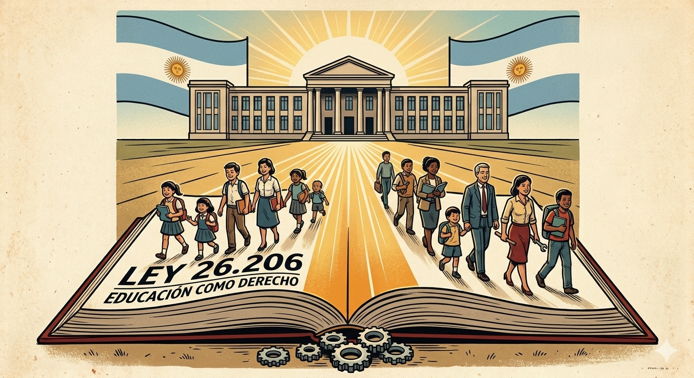

Práctica Profesional III
Grupo 3: Dias Alejandra | Burik Sonia | Coronel Carla | Bogado Franco

1. Finalidad de la Educación en Argentina Arts. 1-11
Según la Ley N.º 26.206, la educación y el conocimiento son un bien público y un derecho personal y social, garantizados por el Estado Art. 2. El Estado Nacional, las Provincias y la CABA tienen la responsabilidad principal e indelegable de proveerla, garantizando igualdad, gratuidad y equidad Art. 4.
Inclusión y Equidad
Art. 11e, 11fGarantizar la igualdad de oportunidades y erradicar cualquier tipo de discriminación.
Democracia
Art. 3, 11cFormar ciudadanos conscientes de sus derechos, deberes y valores éticos.
Desarrollo Social
Art. 3Vincular el aprendizaje con el desarrollo socioeconómico y la identidad nacional.
Gratuidad y Financiamiento
Art. 4, 9El Estado garantiza servicios gratuitos y un piso de inversión: mínimo 6% del PBI destinado a educación.
¿Por qué creés que la educación es un derecho y no solo un servicio?
2. Características y Propósitos del Nivel Secundario Arts. 15-17, 29-61, 134
Estatus: Obligatorio y constituye una unidad pedagógica y organizativa Art. 29, destinada a adolescentes y jóvenes que completaron la Educación Primaria.
El Art. 30 establece la triple finalidad de la Educación Secundaria:
- Formación Ciudadana: Capacitar para el ejercicio pleno de la ciudadanía democrática.
- Inserción Laboral: Habilitar para la incorporación al mundo del trabajo y la producción.
- Estudios Superiores: Preparación conceptual y metodológica para la universidad o terciarios.
Objetivos específicos (Art. 30, incisos a-j)
Derechos humanos, pluralismo, rechazo a la discriminación, preservación del patrimonio.
Usar el conocimiento para comprender y transformar el entorno social, económico y ambiental.
Capacidades de investigación, trabajo individual y en equipo, esfuerzo e iniciativa.
Lengua española oral y escrita, más comprensión y expresión en una lengua extranjera.
Acceso al conocimiento a través de las distintas áreas y disciplinas que lo constituyen.
Comprensión y utilización inteligente y crítica de los nuevos lenguajes tecnológicos.
Relacionar a los estudiantes con el mundo del trabajo, la ciencia y la tecnología.
Procesos que permitan una elección profesional y ocupacional informada.
Creación artística, placer estético y formación corporal y motriz.
- Ciclo Básico: Común a todas las orientaciones. Art. 31
- Ciclo Orientado: Diversificado según áreas del conocimiento y del trabajo. Art. 31
- Carga Horaria: Mínimo de 25 horas reloj semanales. Art. 32c
- Acompañamiento: Presencia de tutores, coordinadores y gabinetes interdisciplinarios. Art. 32b, 32h
Dos formatos posibles a nivel jurisdiccional (Art. 134)
Primaria de 6 años + Secundaria de 6 años.
Primaria de 7 años + Secundaria de 5 años.
El Sistema Educativo Nacional se organiza en 4 niveles (Inicial, Primaria, Secundaria, Superior) y 8 modalidades Art. 15-17 — ver la pestaña "Modalidades del Nivel".
- Destinadas a estudiantes mayores de 16 años, durante el período lectivo. Art. 33
- Duración máxima de hasta 6 meses, en empresas, organismos estatales u organizaciones de la sociedad civil. Art. 33
- Carácter estrictamente educativo: No generan ni reemplazan una relación laboral ni vínculo contractual. Art. 33
- Se realizan con acompañamiento de docentes y/o autoridades pedagógicas designadas a tal fin. Art. 33
- Escuelas técnicas y agrotécnicas: se rigen además por la Ley N.° 26.058. Ley 26.058, Art. 15-16
El Nivel Secundario no es homogéneo: se articula con modalidades que atienden necesidades específicas Art. 17.
Técnico Profesional
Art. 38Formación de técnicos medios en áreas ocupacionales específicas.
Artística
Art. 39-41Música, Danza, Artes Visuales, Plástica, Teatro y otras especializaciones.
Especial
Art. 42-45Garantiza la inclusión de estudiantes con discapacidades temporales o permanentes.
Jóvenes y Adultos
Art. 46-48Garantiza la secundaria a quienes no la completaron en la edad reglamentaria.
Rural
Art. 49-51Modelos adaptados a la ruralidad, con igual calidad que en zonas urbanas.
Intercultural Bilingüe
Art. 52-54Preserva lenguas, cosmovisiones e identidades de los pueblos indígenas.
Contextos de Privación de Libertad
Art. 55-59Garantiza el derecho a la educación con titulación de validez nacional.
Domiciliaria y Hospitalaria
Art. 60-61Continuidad pedagógica cuando la salud impide asistir 30 días o más.
Contenidos de enseñanza obligatoria en todas las escuelas secundarias del país:
Perspectiva Latinoamericana
Art. 92aFortalecimiento de la región, particularmente del MERCOSUR.
Causa Malvinas
Art. 92bRecuperación de las Islas Malvinas, Georgias del Sur y Sandwich del Sur.
Memoria y Derechos Humanos
Art. 92cReflexión sobre el terrorismo de Estado y defensa del Estado de Derecho.
Educación Ambiental
Art. 89Valores y actitudes acordes a un ambiente equilibrado y sostenible.
ESI e Igualdad de Género
Art. 11p, 92fFormación integral de una sexualidad responsable y sin discriminación.
Cooperativismo y Mutualismo
Art. 90Incorporación de sus principios y valores en la enseñanza y capacitación docente.
Prevención de Adicciones
Art. 11qValores y actitudes para prevenir el uso indebido de drogas.
¿Qué parte de la estructura del Nivel Secundario te resulta más importante?
3. Rol Docente, Estudiantes y Familias Arts. 67-78, 125-129
El Docente
Lugar: Agente clave del sistema educativo. Art. 67
Derechos
- Capacitación y actualización gratuita y en servicio. Art. 67b
- Libertad de cátedra y libertad de enseñanza. Art. 67c
- Participación activa en el proyecto institucional. Art. 67d
Obligaciones
- Capacitarse y actualizarse en forma permanente. Art. 67-obl c
- Proteger y garantizar los derechos de niños/as y adolescentes. Art. 67-obl e
Formación Docente
Se estructura en dos ciclos: formación básica común y formación especializada Art. 75. El Instituto Nacional de Formación Docente coordina las políticas de formación inicial y continua. Art. 76
Los Estudiantes
Derechos
- Educación integral e igualitaria en calidad y cantidad. Art. 126a
- Ser evaluados con criterios rigurosos e informados al respecto. Art. 126e
- Formar centros, asociaciones y clubes de estudiantes. Art. 126h
- Ser protegidos contra toda agresión física, psicológica o moral. Art. 126d
Deberes
- Asistir a clase regularmente y con puntualidad. Art. 127f
- Estudiar y esforzarse por el máximo desarrollo posible. Art. 127a
- Respetar las normas de convivencia de la institución. Art. 127d-e
Frases para pensar la exposición
Padres, Madres y Tutores/as
Derechos
- Ser reconocidos como agentes naturales y primarios de la educación. Art. 128a
- Elegir la institución cuyo ideario responda a sus convicciones. Art. 128c
- Ser informados periódicamente sobre la evolución educativa. Art. 128d
Deberes
- Asegurar la concurrencia a los establecimientos escolares. Art. 129b
- Seguir y apoyar la evolución del proceso educativo. Art. 129c
- Respetar la autoridad pedagógica del/de la docente. Art. 129d
¿Qué responsabilidad te parece más difícil de cumplir: la del docente o la del estudiante?
4. Relación con la Educación Tecnológica Arts. 30f-g, 71-73, 88
La Ley N.º 26.206 no trata a la tecnología como una materia técnica aislada: la reconoce como una herramienta de pensamiento crítico y de transformación social. Sobre esa idea se apoyan los tres pilares de nuestra disciplina.
Enfoque Sociotécnico
Art. 30gLa tecnología no es solo el artefacto: es una construcción humana que transforma la sociedad y el ambiente.
Cultura Digital y TIC
Art. 30f, 88Comprender críticamente las tecnologías, no solo saber usarlas.
Resolución de Problemas
Art. 30gEl método propio del área: analizar productos, diseñar y proponer innovaciones técnicas.
El objetivo del Art. 30, inciso f, parte por parte
"Desarrollar las capacidades necesarias para la comprensión y utilización inteligente y crítica de los nuevos lenguajes producidos en el campo de las tecnologías de la información y la comunicación."
El foco está en formar una habilidad duradera, no en transmitir un dato puntual.
Las dos cosas juntas: entender cómo funciona y además poder usarlo.
Con criterio propio, evaluando usos, límites y efectos de cada tecnología.
Los códigos y formatos de la información y la comunicación digital.
En pocas palabras: formar personas capaces de comprender y usar las tecnologías digitales con criterio propio.
Además, la ley habilita
- Investigación e innovación educativa: incentiva experimentar y sistematizar propuestas que renueven la enseñanza, algo central para un proyecto de aula en Tecnología. Art. 73c
- Formación docente continua: el desarrollo profesional del profesorado en tecnología es gratuito y a lo largo de toda la carrera. Art. 67b, 71
¿Cómo se relaciona esto con lo que estás aprendiendo en tu propia formación como docente de Tecnología?
5. Impacto en la Práctica Docente Actual Arts. 79-84, 89-92, 123
Aulas heterogéneas que exigen diversificación metodológica para garantizar la permanencia y el egreso sin bajar la calidad. Art. 79-80
Integración obligatoria de ESI, Educación Ambiental y formación ética dentro del taller o aula de Tecnología. Art. 11p, 89, 92
Articulación constante con tutores, gabinetes y la comunidad técnica-productiva. Art. 32h, 123f
¿Qué desafío docente te parece más presente en las escuelas hoy?
Muro de Debate en Vivo
Para todo el curso: ¿Qué desafío principal enfrenta el docente de Tecnología en la Secundaria actual?